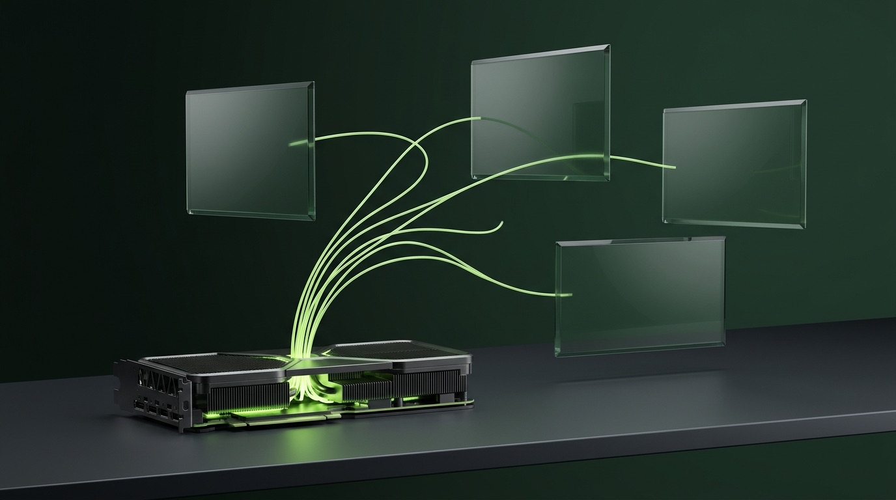

Wire local Ollama weights (localhost:11434/v1) straight into OpenCode, Aider, Continue, Raycast, Obsidian, and n8n—pairing frontier cloud planners with zero-cost local coders, defeating the silent num_ctx repo-map trap, and securing home-GPU serving over Tailscale and Bearer-authenticated proxies.
ollama launch & opencode.json
Aider ollama_chat/ + Architect
Continue FIM + Next Edit
32K–64K Coding Modelfiles
Raycast, Obsidian & n8n
Tailscale + Caddy/Nginx Auth

2048/4096 context default with pinned 32K–64K coding Modelfiles, OLLAMA_CONTEXT_LENGTH, and q8_0 KV caching.127.0.0.1:11434 locked off public Wi-Fi—tunnel your desktop GPU cleanly to laptops using Tailscale Serve, Caddy/Nginx Bearer auth, and OLLAMA_ORIGINS.
Running a local model inside your terminal or IDE feels effortless once you wire each tool cleanly—yet most developers hit a wall on day one because default context limits quietly chop off repository maps. Mastering role-based routing, explicit num_ctx Modelfiles, and authenticated LAN tunnels turns Ollama into a reliable daily coding engine.
num_ctx Trapp. 5ollama psAll
Once you understand unified memory budgets and GGUF/MLX sizing on your machine, the real productivity jump comes from splitting coding roles across specialized weights. Rather than forcing one model to plan architecture, complete keystrokes, and embed files simultaneously, wire each harness to the exact Ollama slot built for that job.
32B chat model to IDE tab autocomplete, and never trust a tiny 1.5B model with multi-file refactors. Keep a tiny 1.5B FIM model and nomic-embed-text resident for instant keystrokes and search, while a 14B–32B coder (plus an optional cloud planner) handles heavy edits.
Every coding harness speaks either Ollama’s OpenAI-compatible /v1 route or native /api/chat. Match your RAM budget to specialized coding weights first, then wire each client cleanly.
| Ollama Model Tag | VRAM + 32K KV | Primary Role | Sweet Spot & Operational Notes |
|---|---|---|---|
qwen2.5-coder:1.5b / 7b |
~1.2–5.5 GB |
Tab Autocomplete (FIM) | Sub-100ms inline completions in Continue on 16 GB laptops without evicting chat weights. |
nate/instinct (7B) |
~5.2–6.5 GB |
IDE Next Edit | Qwen2.5-Coder-7B fine-tune powering Continue’s proactive multi-line Next Edit diff overlays. |
qwen2.5-coder:14b / 32b |
~11–24 GB |
Dense Daily Coder | Reliable across 40+ languages; crisp Aider diff / whole edits on 24–64 GB rigs. |
qwen3-coder:30b (MoE) |
~21–26 GB |
Agentic File Coder | MoE decode speed with 256K native context support; pairs with 480b-cloud for huge repos. |
devstral-small-2 (24B) |
~17–22 GB |
SWE Tool Loops | Apache 2.0 Mistral + All Hands AI weights built for terminal navigation and tool calls. |
deepseek-r1:14b / 32b |
~11–24 GB |
Local Architect | Thinking-token reasoning shines as Aider’s --architect planner paired with Qwen coder. |
nomic-embed-text |
~274 MB (768d) |
Repo & Vault RAG | Powers Continue @codebase and Obsidian Smart Connections offline at zero token cost. |
| Harness | Endpoint & Config File | Required Prefix / Schema | Critical Setup Rule |
|---|---|---|---|
| OpenCode Terminal TUI |
http://127.0.0.1:11434/v1~/.config/opencode/opencode.json |
@ai-sdk/openai-compatible + explicit models |
Run ollama launch opencode for zero-config, or declare limit.context in JSON. |
| Aider Git Pair Coder |
OLLAMA_API_BASE.aider.conf.yml |
ollama_chat/<model> (NEVER ollama/) |
Pin num_ctx: 32768 in .aider.model.settings.yml so repo maps never clip. |
| Continue IDE VS Code / JB |
Native provider: ollama~/.continue/config.yaml |
schema: v1 with explicit roles array |
Split chat, autocomplete, Next Edit (instinct), and embed roles. |
| Raycast AI macOS Launcher |
Native Sync or /v1~/.config/raycast/ai/providers.yaml |
provider: custom + explicit context |
Custom providers.yaml adds keep_alive, tools: true, and context caps. |
| Obsidian Copilot / Smart |
http://127.0.0.1:11434Plugin BYOK Settings |
nomic-embed-text + local chat tag |
Set OLLAMA_ORIGINS to allow app://obsidian.md or Electron CORS returns 403. |
| n8n Visual Nodes |
http://host.docker.internal:11434 (Ollama Credential) |
Bridge URL (NO trailing slash) | Inside Docker, localhost hits n8n itself—use host.docker.internal or ollama:11434. |
ollama launch Before Hand-Editing Configsollama launch, wiring local or Ollama-cloud models directly into coding tools without manual JSON. Run ollama launch opencode (or ollama launch claude / codex), or pass --config to generate settings without starting a session.
Seven coordinated settings ensure every coding agent, IDE autocomplete trigger, and desktop launcher shares one fast, unclipped Ollama engine without spilling into slow swap or exposing port 11434.
OLLAMA_ORIGINS="app://obsidian.md" • n8n: host.docker.internal:11434https://gpu.tailnet.ts.net + Caddy Bearer check
ollama ps): Verifies that your coder, FIM model, and embedder all read 100% GPU and display the expected CONTEXT token budget.
PARAMETER num_ctx 32768 and low temperature directly into an alias so any client inherits a safe window automatically.
@ai-sdk/openai-compatible with exact local tags and limit.context so OpenCode never under-sizes prompts.
q8_0 (halving RAM use) and enables OLLAMA_MAX_LOADED_MODELS=3 so FIM + Coder + Embed coexist.
ollama_chat/ + Settings: Uses structured chat endpoints (never bare ollama/) and pins num_ctx inside .aider.model.settings.yml.
1.5B FIM, instinct Next Edit, and nomic-embed-text cleanly alongside heavy chat models.
127.0.0.1:11434, exposes encrypted Tailscale HTTPS or Caddy/Nginx Bearer authentication for remote laptops, and permits Electron/Docker desktop harnesses explicitly.
4K Context Trap With Coding Modelfiles
Even when a model card advertises 128K or 256K context, Ollama historically defaulted to 2048 tokens and modern builds baseline around 4096 tokens unless overridden. Feed a coding agent a 12,000-token repo map and Ollama silently drops the top 8,000 tokens without raising an error!
num_ctx 32768 into a custom coding Modelfile—paired with q8_0 KV cache compression—lets Aider repo maps, OpenCode tool schemas, and multi-file diffs flow cleanly without clipping system instructions.
A single coding turn packs system rules (1.5K), MCP/tool JSON schemas (2K), Aider’s tree-sitter repo map (3K), and open files (6K). At num_ctx 4096, the harness loses your system prompt and earlier edits—causing infinite loops and hallucinated imports.
Ignore blog posts mentioning an unofficial OLLAMA_NUM_CTX variable—Ollama ignores it. Override context only via: (a) OLLAMA_CONTEXT_LENGTH=32768, (b) a Modelfile PARAMETER num_ctx, or (c) per-request options.num_ctx. Confirm in ollama ps!
# 1. Enable Flash Attention, q8_0 KV Cache (halves context VRAM), & multi-model slots (macOS / Linux):
launchctl setenv OLLAMA_FLASH_ATTENTION 1
launchctl setenv OLLAMA_KV_CACHE_TYPE q8_0
launchctl setenv OLLAMA_CONTEXT_LENGTH 32768
launchctl setenv OLLAMA_MAX_LOADED_MODELS 3 # Keeps 1.5B FIM + nomic-embed + 30B Coder resident!
# 2. Save as Modelfile.coder32k (for 32K or 64K coding sessions) and compile zero-copy alias:
FROM qwen3-coder:30b
PARAMETER num_ctx 32768
PARAMETER num_gpu 999
PARAMETER temperature 0.15
PARAMETER repeat_penalty 1.05
SYSTEM "You are a precise software engineer. Emit complete, valid patches strictly matching repo symbols."
# Build alias and verify live CONTEXT + 100% GPU split:
ollama create qwen3-coder-32k -f Modelfile.coder32k && ollama run qwen3-coder-32k "ping"
ollama psOLLAMA_KV_CACHE_TYPE=q8_0 enabled, jumping from 4K to 32K context adds roughly 1.5–3.5 GB of memory overhead depending on layer/head count. On 16 GB laptops, cap heavy edits at 16384 on a 7B–14B model; on 32 GB–64 GB workstations, 32768–65536 glides cleanly.
You do not have to choose between an expensive all-cloud subscription and struggling through complex refactors on small local weights. Split your harness into a Planner (cloud frontier or local deepseek-r1) and a zero-cost Local Coder.
ollama_chat/ or OpenCode,
[3. Instant FIM & Next Edit] streams sub-100ms tab completions,
[4. Verified num_ctx Slot] protects repo maps at 32K–64K,
indexes files via nomic-embed-text,
[6. Authenticated LAN Proxy] shares workstation GPUs safely.
~/.config/opencode/opencode.json){
"$schema": "https://opencode.ai/config.json",
"provider": {
"ollama": {
"npm": "@ai-sdk/openai-compatible",
"name": "Ollama (Local GPU)",
"options": {
"baseURL": "http://127.0.0.1:11434/v1"
},
"models": {
"qwen3-coder-32k": {
"name": "Qwen3 Coder 30B (32K)",
"limit": { "context": 32768, "output": 8192 }
},
"devstral-small-2": {
"name": "Devstral Small 2 (24B)"
}
}
}
},
"model": "ollama/qwen3-coder-32k"
}.aider.conf.yml + Model Settings)# .aider.conf.yml (project root or $HOME)
architect: true
model: anthropic/claude-sonnet-4-5
editor-model: ollama_chat/qwen3-coder-32k
edit-format: diff
map-tokens: 4096
auto-commits: true
# .aider.model.settings.yml (pins num_ctx!)
- name: ollama_chat/qwen3-coder-32k
edit_format: diff
extra_params:
num_ctx: 32768
# 100% air-gapped local alternative CLI:
# aider --architect \
# --model ollama_chat/deepseek-r1:32b \
# --editor-model ollama_chat/qwen2.5-coder:32b \
# --edit-format diffollama_chat/ (Never ollama/)ollama_chat/ activates Ollama’s structured /api/chat endpoint so system rules, repo maps, and multi-turn edits parse cleanly—whereas bare ollama/ falls back to raw /api/generate completions that break diff blocks.
ollama list tag names under models (or run ollama launch opencode --config). Use OpenCode’s Plan mode with a cloud model, then press Tab to let local qwen3-coder-32k execute edits for free.
Inside VS Code and JetBrains, latency makes or breaks flow. Continue’s modern schema: v1 configuration lets you assign four distinct local Ollama models to separate IDE roles so keystrokes never wait behind a heavy 30B chat reply.
qwen2.5-coder:1.5b generates Fill-In-the-Middle completions at 65–90 tok/s in ~1.1 GB RAM—giving instant ghost text on airplanes with zero rate limits.
instinct)
Pull ollama pull nate/instinct (or add uses: continuedev/instinct) to predict multi-line follow-up diff edits as your cursor moves through a file.
@codebase RAG
Assign nomic-embed-text:latest to the embed role so Continue continuously vectorizes branch changes on-device without uploading proprietary source trees.
~/.continue/config.yaml (Schema v1 Multi-Role Setup)name: Local Hybrid Ollama IDE
version: 1.0.0
schema: v1
models:
- name: Local Qwen3 Coder 32K # Chat, Edit, Apply & Tool Calling
provider: ollama
model: qwen3-coder-32k # Custom 32K Modelfile from Page 5!
roles: [chat, edit, apply]
capabilities: [tool_use]
- name: Local Qwen 1.5B FIM # Fast Reactive Tab Autocomplete
provider: ollama
model: qwen2.5-coder:1.5b
roles: [autocomplete]
- uses: continuedev/instinct # Proactive Next Edit diff predictor (run: ollama pull nate/instinct)
- name: Local Nomic Repo Embedder # Private @codebase semantic indexing
provider: ollama
model: nomic-embed-text:latest
roles: [embed]
context:
- provider: code
- provider: diff
- provider: terminal
- provider: problems
- provider: repo-mapOLLAMA_MAX_LOADED_MODELS=31.5b FIM evicts your 30b chat model—causing 10-second reload stalls on every prompt! Verify ollama ps shows all three slots loaded together, or set OLLAMA_MAX_LOADED_MODELS=3.
config.yaml and pulling nate/instinct, click Continue’s bottom-right status bar item to toggle Next Edit / Autocomplete overlays, and run Developer: Reload Window if icons lag behind.
Once Ollama is tuned on loopback (or served over your private LAN), plug the exact same weights into system-wide hotkey commands, local-first Markdown vaults, and self-hosted visual automations.
Enable Local Models under Settings → AI to auto-sync tags, or create ~/.config/raycast/ai/providers.yaml targeting http://127.0.0.1:11434/v1 with explicit context and keep_alive controls.
In Copilot BYOK or Smart Connections, set Base URL to http://127.0.0.1:11434 and pick nomic-embed-text for embeddings. Must set OLLAMA_ORIGINS so Electron does not throw 403 CORS errors!
When n8n runs in Docker, localhost fails! Set the Ollama node credential Base URL to http://host.docker.internal:11434 (host Ollama) or http://ollama:11434 (shared Compose network), with no trailing slash.
# A. macOS Fix for Obsidian Electron CORS (allow Obsidian + local dev tools without opening '*' globally):
launchctl setenv OLLAMA_ORIGINS "app://obsidian.md,http://localhost:*" # Restart Ollama.app afterward
# B. Raycast Custom Provider (~/.config/raycast/ai/providers.yaml):
providers:
- id: ollama-local
name: "Ollama Local GPU"
base_url: http://127.0.0.1:11434/v1
models:
- id: "qwen3-coder-32k:latest"
name: "Qwen3 Coder (32K)"
context: 32768
provider: custom
additional_parameters: { keep_alive: "15m" }
abilities: { temperature: true, system_message: true, tools: true, vision: false }Drop these five battle-tested recipes into your shell, repo root, or desktop app to lock in high-context local coding, low-cost hybrid planning, and private workflow automation right out of the box.
| Recipe & Stack | Copy-Paste Command / Configuration Snippet |
|---|---|
| 1. Zero-Config OpenCode Session Fastest Local Terminal Agent |
OLLAMA_CONTEXT_LENGTH=32768 ollama launch opencodeOr write settings non-interactively first: ollama launch opencode --config, then verify your exact tag and limit.context: 32768 inside ~/.config/opencode/opencode.json.
|
| 2. Cloud Architect + Local Ollama Editor Best Cost / Accuracy Split |
aider --architect --model anthropic/claude-sonnet-4-5 \ --editor-model ollama_chat/qwen3-coder-32k --edit-format diffKeep extra_params: { num_ctx: 32768 } in .aider.model.settings.yml so repo maps never clip.
|
| 3. 100% Air-Gapped Local Architect Loop Zero Cloud Egress on Flights |
aider --architect --model ollama_chat/deepseek-r1:14b \ --editor-model ollama_chat/qwen2.5-coder:14b --edit-format wholeNote: use whole edit format when running 7B–14B editors for rock-solid file rewrites.
|
| 4. Continue Tri-Role IDE Setup FIM + Next Edit + Repo RAG |
ollama pull qwen2.5-coder:1.5b && ollama pull nate/instinct && ollama pull nomic-embed-textSet OLLAMA_MAX_LOADED_MODELS=3 and assign [autocomplete], continuedev/instinct, and [embed] in ~/.continue/config.yaml alongside your main [chat, edit, apply] model.
|
| 5. Dockerized n8n + Obsidian Bridge Local Vault & Batch Triage |
Host Linux/Mac: OLLAMA_ORIGINS="app://obsidian.md,http://localhost:*"n8n Ollama Credential Base URL: http://host.docker.internal:11434 (Docker Desktop) or http://ollama:11434 (Compose network). Pass "keep_alive": 0 on batch jobs to release VRAM immediately.
|
24B–32B+ models (qwen3-coder:30b, devstral-small-2), Aider’s diff format saves time and tokens. On compact 7B–14B laptop weights, switch to --edit-format whole whenever search-and-replace hunks fail to match line context.
OLLAMA_KEEP_ALIVE=30m in your interactive shell so your coding model stays hot across coffee breaks. Conversely, configure automated n8n batch webhooks with keep_alive: 0 so background triage yields VRAM back to your IDE right away.
Tapping a 24 GB–64 GB GPU under your home desk from a thin laptop feels magical—until someone realizes Ollama ships with zero native authentication. Never bind OLLAMA_HOST=0.0.0.0 onto an unprotected network; lock Ollama to loopback and wrap it in Tailscale plus a Bearer proxy.
OLLAMA_HOST to Loopback
Keep OLLAMA_HOST=127.0.0.1:11434 (default). Anyone who reaches an open 0.0.0.0:11434 socket can run inference on your power bill, inspect ollama ps, or pull/delete models. Let your encrypted tunnel or proxy sit in front!
tailscale serve --bg http://127.0.0.1:11434 grants private tailnet HTTPS (*.ts.net), while Caddy or Nginx adds strict Authorization: Bearer token verification for OpenCode, Continue, and shared studio LANs.
# /etc/caddy/Caddyfile (export OLLAMA_API_KEY in systemd env)
gpu-box.your-tailnet.ts.net {
@apiAuth {
header Authorization "Bearer {env.OLLAMA_API_KEY}"
}
handle @apiAuth {
reverse_proxy 127.0.0.1:11434 {
flush_interval -1 # Critical for live SSE streaming!
transport http {
read_timeout 1h
write_timeout 1h
}
}
}
handle { respond "Unauthorized" 401 }
}# Proxy Tailscale Serve -> Nginx :8080 -> 127.0.0.1:11434
map $http_authorization $llm_auth_ok {
default 0;
"Bearer REPLACE_WITH_LONG_SECRET" 1;
}
server {
listen 127.0.0.1:8080;
location / {
if ($llm_auth_ok = 0) { return 401; }
proxy_pass http://127.0.0.1:11434;
proxy_http_version 1.1;
proxy_buffering off; # Never buffer token streams
proxy_read_timeout 600s;
}
}
# Then expose securely: tailscale serve --bg http://127.0.0.1:8080flush_interval -1 (Caddy) or proxy_buffering off (Nginx), coding agents stall waiting for an entire file edit before rendering token #1—and hit 60-second proxy timeouts during large 32K prompt prefills. Also verify curl -i https://gpu-box.your-tailnet.ts.net/api/version returns 401 Unauthorized without your Bearer header before connecting any client!
See how a lightweight travel laptop, a quiet desktop workstation GPU over Tailscale HTTPS, and selective cloud reasoning unite into one fast, low-cost engineering workflow where sensitive code stays under your roof.
Keep a lightweight qwen2.5-coder:1.5b model right on your laptop for zero-lag Continue FIM completions—even on planes or spotty hotel Wi-Fi without touching any remote link.
Point OpenCode, Aider, and Raycast at your home desktop’s https://gpu-box.tailnet.ts.net/v1 Bearer proxy so your thin laptop borrows 30B–32B speeds silently with zero thermal throttling.
Use a frontier cloud model (or deepseek-r1:32b) in Aider --architect or OpenCode Plan mode for tricky race conditions, then switch right back to local Ollama for editing and test loops.
Nightly Dockerized n8n hooks summarize merged commits through Ollama (keep_alive: 0) into your Obsidian vault, where nomic-embed-text indexes every architectural decision offline.
use-local-gpu (OLLAMA_HOST=http://127.0.0.1:11434) and use-home-gpu (OPENAI_BASE_URL=https://gpu-box.tailnet.ts.net/v1 + Bearer key)—so switching between local laptop silicon and your desk rig takes one second.
Use this diagnostic reference whenever repo maps vanish mid-session, Aider garbles file patches, Continue swaps models on every keystroke, Obsidian hits 403 CORS errors, or remote proxy streams hang.
| Symptom / Failure | Root Cause | 10-Second Fix |
|---|---|---|
| 1. Agent forgets repo map or loops endlessly | Default 2048/4096 num_ctx silently clipped system prompt & tree-sitter map. |
Bake PARAMETER num_ctx 32768 into a Modelfile, set OLLAMA_CONTEXT_LENGTH=32768 or .aider.model.settings.yml, and confirm via ollama ps. |
| 2. Aider garbles diffs or ignores instructions | Used bare ollama/ prefix instead of ollama_chat/, or diff format on 7B weights. |
Always pass ollama_chat/<model> so LiteLLM uses /api/chat; use --edit-format whole on 7B–14B models. |
| 3. OpenCode reports missing model or tool failure | Exact tag absent from opencode.json models block, or tag lacks tool support. |
Run ollama launch opencode --config or match exact ollama list tag under @ai-sdk/openai-compatible with qwen3-coder or devstral. |
| 4. Continue typing stalls 10s between edits | Same heavy model set for FIM & chat, or MAX_LOADED_MODELS=1 evicts weights. |
Assign qwen2.5-coder:1.5b to [autocomplete], pull nate/instinct for Next Edit, and set OLLAMA_MAX_LOADED_MODELS=3. |
| 5. Obsidian Copilot / Smart Connections gets 403 | Ollama rejected Electron’s app://obsidian.md CORS preflight header. |
Run launchctl setenv OLLAMA_ORIGINS "app://obsidian.md,http://localhost:*" (or systemd env) and restart Ollama. |
6. Dockerized n8n fails to reach localhost:11434 |
Inside Docker, localhost resolves to the n8n container instead of the host. |
Use http://host.docker.internal:11434 (or http://ollama:11434 on shared Compose bridge) with no trailing slash. |
| 7. Remote Tailscale/LAN prompt hangs before token #1 | Caddy/Nginx buffered SSE response chunks or timed out during 32K prefill. | Add flush_interval -1 + 1h timeouts in Caddy (or proxy_buffering off; proxy_read_timeout 600s; in Nginx) and verify Bearer token. |
32K+ in ollama ps: Confirm the live CONTEXT column reads 32768+ (never default 4096) before opening large repos.100% GPU & q8_0 KV: Enable OLLAMA_FLASH_ATTENTION=1 and OLLAMA_KV_CACHE_TYPE=q8_0 so weights never touch swap.ollama_chat/ in Aider, /v1 in OpenCode & Raycast, and explicit roles in Continue config.yaml.OLLAMA_MAX_LOADED_MODELS=3 so FIM (1.5B), Embedder (nomic), and Coder coexist smoothly.app://obsidian.md in OLLAMA_ORIGINS and aim Docker n8n at host.docker.internal.OLLAMA_HOST=127.0.0.1:11434 and verify your LAN proxy returns 401 without a Bearer token.